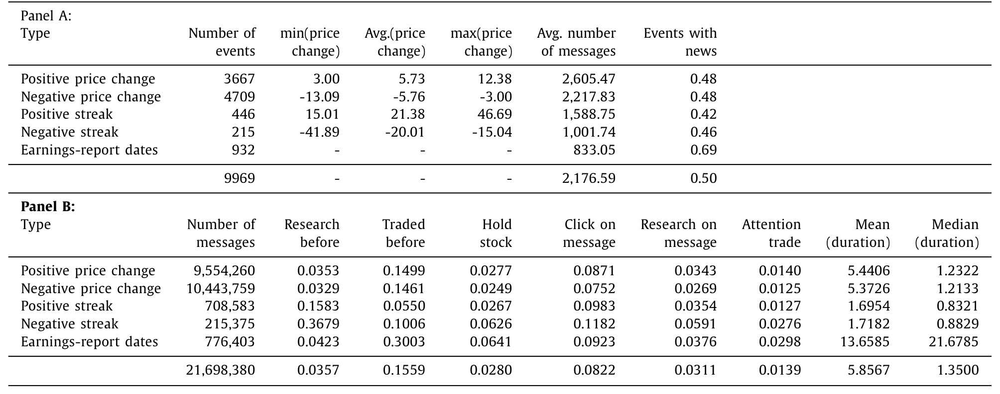
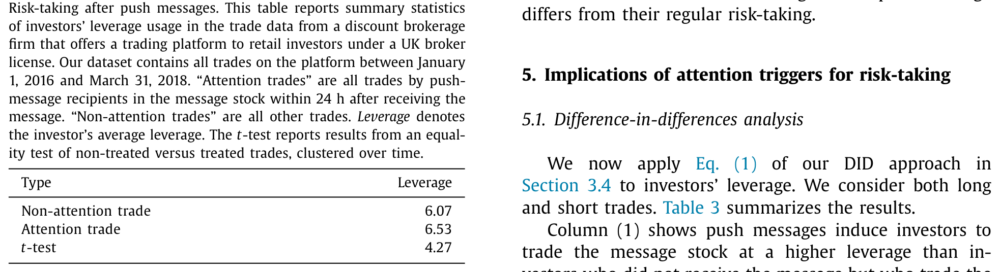
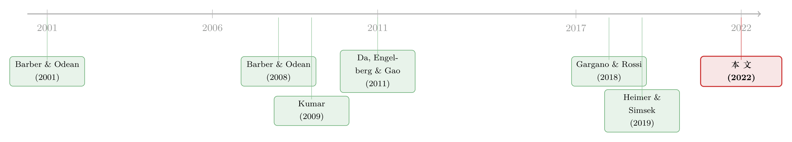

一条「跌了5%」的推送，如何让你悄悄加了杠杆
本文读的是 Arnold, Pelster & Subrahmanyam (2022, Journal of Financial Economics)：一家券商向散户手机推送「某只股票今天涨/跌了多少」这种不含任何新信息的标准化消息；作者用双重差分发现，被推送「触发」的那笔交易，平均要比普通交易多背 19 个百分点 的杠杆。注意力本身——而非信息——就足以把人推向更高的风险。
1 一个再普通不过的「叮」
先想象这样一个场景。你手机屏幕亮了一下，一条推送躺在那里：「$AFSI shares down over -5.2%」。
这条消息里有什么？什么都没有。股价跌了 5.2% 这件事，是公开的、人人可见的、你打开任何一个行情软件都能查到的。它不告诉你公司基本面发生了什么，不预测明天，甚至连「该买」还是「该卖」都没暗示。它唯一做的事，就是——让你看了一眼这只股票。
那么问题来了：仅仅是「看了一眼」，会改变你的投资决策吗？更尖锐地说，它会不会让你冒更大的险？
这听上去几乎不像一个能被严肃回答的问题。注意力 (attention) 是个滑溜溜的东西，它和信息、情绪、交易冲动纠缠在一起，很难单独拎出来。但本文的三位作者恰好抓到了一个近乎完美的实验场——他们的答案是：会，而且代价不小。
2 真正困难的，是「干净地」触发注意力
金融学其实早就知道注意力要紧。Barber 和 Odean (2008) 那篇经典论文就说过：散户倾向于买入那些「抓眼球」的股票（大涨大跌、上新闻、成交量异常）。但他们研究的是注意力对买卖方向的影响。
接着，一个自然的问题是：注意力会不会影响风险承担 (risk-taking) 本身？这才是选择理论的核心，也关系到金融稳定。可这里有个绕不过去的坎：你怎么找到一个外生 (exogenous) 的、只针对某个特定个人、把他的注意力推向某只特定股票的「触发器」？
研究者真正头疼的，从来不是「注意力重不重要」，而是怎么把它从一堆混杂因素里干净地剥出来。
本文的妙处，就在于它找到了这样一个触发器。
作者拿到了一家持有英国券商牌照的折扣券商的全部交易记录。这家券商让散户交易 差价合约 (contracts for difference, CFD)——一种价格完全复制标的证券、却允许灵活加杠杆、还能随时做空的衍生品。在欧洲和亚洲，CFD 的交易量相当可观。关键的两点是：
- 杠杆是逐笔自选的。 监管把单只股票 CFD 的最高杠杆限制在 10 倍，但在这个上限之内，投资者每一笔交易都能自己决定用几倍杠杆。这意味着「选哪只股票」和「冒多大险」被拆成了两个独立的决策——而后者，正是干净的风险度量。
- 2017 年 2 月 27 日起，券商开始推送标准化消息。 消息只有三类：单日大幅价格变动、连续同向的「连涨/连跌」、以及财报日期。全部是公开信息，不含任何新内容。而且，作者既能看到收到推送的人，也能看到没收到推送的人。
于是一个标准的 双重差分 (difference-in-differences, DiD) 框架就摆在了眼前：把「被推送、然后交易了该股票」的人，和同一时间、同一只股票上「没被推送」的人比一比。
3 识别策略：从 DiD 到 DDD
作者把核心定义讲得很清楚。所谓 注意力交易 (attention trade)，指的是投资者在收到某只股票的推送后 24 小时内 交易了这只股票。为什么是 24 小时？三个理由：数据显示推送的影响大约持续一天；「以一个注意力日为窗口」是注意力文献的惯例（Barber and Odean, 2008）；心理学也指出情感反应通常持续数秒到数小时。一个旁证是——推送送出到下单之间的中位反应时间只有 1.35 小时，快得惊人。
基准回归是这样写的：
这里有个识别上的精巧之处值得停一下：因为杠杆和选股被拆开了，所以加进 stock 固定效应之后，β₁ 捕捉到的就不再是「券商专挑高波动股票推送」这类内生性——那些都被股票固定效应吸走了。剩下的，是同一只股票、同一时刻，被『触发』的人比没被触发的人多冒的那部分险。
但真正关键的一步在于：万一券商不是随机发推送的呢？万一她专门在「她预感投资者会加大风险」的时候、或对「她预感会被加杠杆」的股票发消息呢？那 β₁ 就被污染了。
于是作者祭出了 三重差分 (difference-in-difference-in-differences, DDD)：再引入一个维度——投资者究竟是不是这条推送的接收者。直觉是，如果效应来自推送本身而非券商的「择时择股」，那么真正多出来的风险，应该集中在「收到推送 × 推送之后 × 正是被提及的那只股票」这个三交互项上。标准误在投资者层面和时间层面双向聚类 (double-clustered)，以应对异方差和序列相关。
4 数据
样本期是 2016 年 1 月 1 日到 2018 年 3 月 31 日。数据里有 243,617 名活跃投资者，其中 112,242 人有交易、131,375 人只收到推送而未在样本期内交易；总共 3,519,118 笔交易（含 3,393,140 笔完整回合和 125,978 笔开仓）。每笔交易都带有精确时间戳、标的股票、多空标识、成交价、杠杆和仓位。券商还有投资者开户时填的问卷，含性别、年龄、交易经验等。新闻情绪用 Quandl Alpha One，股票特征来自 Refinitiv Datastream 和 Worldscope。
几个有质感的数字：平均杠杆 6.1 倍，平均仓位是账户的 12.8%，按 FCA 披露的 2017 年平均账户约 1875 英镑推算，单笔交易的名义金额约 1464 英镑；平仓时收 24 个基点的交易成本，且这成本不随杠杆变化——这点很重要，它意味着加杠杆并不会让你多付手续费，风险纯粹是「自愿」的。

Table 1
5 主要结果：19 个百分点
核心结论一句话：注意力触发，提高了金融风险承担。
具体而言，一笔注意力交易比非注意力交易多背 19 个百分点 的杠杆。这个系数相当于投资者杠杆选择组内变异 (within-variation) 的 12.5%。考虑到推送里没有任何基本面新闻，这个量级是惊人的——纯粹的「被看了一眼」，就能解释出这么大的风险偏移。

Table 2
在做了最近邻匹配的配对样本里，DiD 的 treat × post 系数是 0.1227（t = 4.63）。而当作者把识别加固到三重差分时，那个最该显著的三交互项 treat × post × stock 依然显著为正，系数 0.1581（t = 2.86）。也就是说，剔除掉券商可能的择时择股之后，效应不仅没消失，反而被更干净地定位到了「对的人、对的时间、对的那只股票」上。这是全文识别上最让人安心的一步。
作者还给了几条「殊途同归」的旁证：注意力触发也提高了交易频率、放大了仓位规模。换个度量，结论都一样。
6 谁最容易被「推」一把？
如果效应是真的，它就该在「更容易被外生注意力俘获」的人和股票上更强。心理学和神经科学早有铺垫：性别、年龄会调节人对外生刺激的敏感度；专家比新手更懂得只盯相关信息（Jarodzka et al., 2010）；交易经验会削弱「无意识」的交易行为（Feng and Seasholes, 2005）。
本文的横截面结果与此吻合：注意力对风险承担的影响，在 男性、更年轻、经验更少 的投资者身上更强。此外，与投资者不熟悉的股票、以及那些天然更能吸引内生注意力的股票（高分析师覆盖、高成交量，沿用 Gargano and Rossi (2018) 的逻辑），触发效应也更大。
这正好对应了作者的两个假设：H1——金融注意力刺激提高风险承担；H2——这一影响在更易感、经验更浅的投资者，以及更不熟悉、更吸睛的股票上更强。
7 文献脉络
这条研究线的源头，是「散户为什么会做傻事」的行为金融传统。Barber 和 Odean (2001) 用「男孩终归是男孩」点出过度自信，Kumar (2009) 揭示彩票偏好，这些都说明散户的投机交易常常损害自身福利。
接着，注意力被请上了台面。Barber 和 Odean (2008) 证明注意力左右散户的买入方向，Da, Engelberg 和 Gao (2011) 用 Google 搜索量造出了「In search of attention」这把直接的尺子。再往后，研究从「聚合注意力」下沉到「个体注意力」——Gargano 和 Rossi (2018) 用登录与浏览行为刻画个人如何分配注意力。

另一条线讲的是杠杆与投机：Heimer 和 Simsek (2019) 指出，金融中介通过提供杠杆放大了投机、损害了社会福利。本文恰好站在这两条线的交汇点——它不问注意力改变了买什么，而问它改变了冒多大险，并把杠杆这个最直接的风险维度，连进了「注意力触发」这根外生的引线。（关于散户注意力、情绪与风险承担的另一面，可参见《注意力是共同的，情绪是私人的》；关于券商如何「推」着散户做决定，可参见《一次「拆股」，如何把散户钉在最高点》。）
评论与延伸（Q&A + 研究方向）
(a) 几个可能的疑问
Q：推送里既然没有新信息，为什么还会改变行为？这不违反理性吗？
关键正在于此。论文的理论根基是行为金融的「双系统」认知与「风险即感受 (risk as feelings)」（Loewenstein et al., 2001）。外生注意力刺激会激活快速、自动的情感系统，打断慢速的理性分析。所以推送改变的不是「信息集」，而是「当下被激活的心理状态」——这恰恰是文章最有意思的反直觉之处。
Q：会不会只是「被推送的人本来就爱冒险」的自选择？
这正是 DiD 加投资者固定效应要处理的：个体层面的风险偏好（无论可观测与否）被吸收掉了。更进一步，三重差分把「券商择时择股」也排除了——三交互项 0.1581（t=2.86）显示效应集中在「对的人×对的时间×对的股票」，而非笼统的处理组差异。
Q：19 个百分点的杠杆，到底算大还是小？
相当于投资者杠杆选择组内变异的 12.5%。换个角度：CFD 杠杆上限是 10，平均用 6.1，19pp 意味着一笔注意力交易会把杠杆推高约 0.19——在「没有任何新信息」的前提下，这个纯注意力效应不可小觑。
Q：CFD 这个小众市场，结论能外推到一般市场吗？
这是外部效度的合理担忧。CFD 的投资者偏投机、杠杆可调，本身就是「易感人群」。作者补充测试了外汇 (FX) 交易，结论一致，缓解了部分担忧；但推送到主流券商 App、ETF、期权场景是否同样成立，仍需更多证据。
Q：24 小时窗口是不是「挑」出来的？
作者给了三重辩护（数据显示影响约持续一天、文献惯例、情感反应的时长），并报告了 1 天的替代设定。中位反应时间仅 1.35 小时也支持短窗口。不过窗口长度与「正常交易」如何划界，始终是这类设计的软肋。
Q：这对投资者保护意味着什么？
直接而尖锐：监管机构（FCA、ESMA）本就担心 CFD 被过度营销给散户。本文说明，连不含信息的标准化推送都能系统性地抬高散户杠杆——这把「推送/通知设计」本身，变成了一个监管对象。
(b) 几个可能的研究问题与提案
- 注意力触发 → 公司债散户化时代的风险承担
- 【经济故事】随着散户通过 ETF、零佣金平台进入信用市场，针对债券/信用产品的推送（评级变动、利差异动）是否同样抬高久期/信用风险敞口？信用市场的「杠杆」体现在期限与评级选择上。
-
【可行性】中。需券商或债券交易平台的逐笔记录＋推送日志，识别可复制本文 DiD/DDD。难点在于零售债券交易数据稀缺。
-
外资持有人的「注意力时差」与风险承担
- 【经济故事】跨境投资者对本地推送/新闻的反应可能滞后或被放大。若把投资者按本国/外国分组，注意力触发的强度是否随「信息距离」变化？这能把注意力文献接到外资持有人这条线上。
-
【可行性】中低。需带投资者国籍标签的跨市场交易数据，识别可行但数据获取难。
-
注意力触发与市场流动性的反馈环
- 【经济故事】如果大量散户被同一条推送同时「触发」并同向加杠杆，是否会在分钟级造成流动性冲击与价格压力？这把个体注意力聚合回市场层面。
-
【可行性】高。本文的推送时间戳＋高频成交数据即可做事件研究，识别相对干净。
-
推送内容的「语气」与风险承担的异质性
- 【经济故事】同样是大幅波动，「连涨」与「连跌」、正面与负面措辞，是否触发不同方向的风险偏移（追涨 vs. 抄底）？这能把「注意力」与「情绪效价」分开。
-
【可行性】高。论文已观测到消息全文与类别（正负、强弱），直接做异质性回归即可。
-
触发后的业绩：散户为这份注意力付了多少「学费」？
- 【经济故事】注意力交易的 ROI 是否系统性更差？若是，这就把「注意力→风险→福利损失」的链条补全，呼应 Heimer-Simsek 的福利视角。
- 【可行性】高。数据含净交易成本后的 ROI 和持有期，可直接比较注意力交易与非注意力交易的事后表现。
我的判断
贡献。 本文最漂亮的地方，是把「注意力」从信息和选股里外科手术式地剥离出来：用一条不含新信息的标准化推送做外生触发，用 CFD「杠杆可逐笔自选」的制度特征把风险维度从选股决策中独立出来，再用 DiD/DDD 层层加固。它第一次干净地证明了——注意力本身就是风险承担的一个维度，而不只是买卖方向的推手。
对识别的担忧。 我最大的保留有两点。其一，券商发推送终究不是抛硬币，三重差分缓解了择时择股，但「券商的算法在向谁推送」这个黑箱仍未完全打开，若推送策略与投资者的隐含状态（如近期盈亏）相关，残余内生性难以排尽。其二，外部效度：CFD 散户是高度自选的投机人群，19pp 的量级未必能平移到养老金、共同基金这类长钱身上。
后续想看到的。 我想看三件事：一是触发后的事后业绩与福利核算，把「冒更多险」翻译成「亏更多钱」的真实账单；二是聚合层面的流动性后果——当成千上万人被同一条「叮」同时点燃，市场会不会短暂地「踩踏」；三是把这套识别搬到信用市场与外资持有人上，看注意力触发在久期、评级、跨境维度上是否同样咬人。
参考文献
Arnold, M., Pelster, M., & Subrahmanyam, M. G. (2022). Attention triggers and investors' risk-taking. Journal of Financial Economics 143(2), 846–875.
Barber, B. M., & Odean, T. (2001). Boys will be boys: Gender, overconfidence, and common stock investment. Quarterly Journal of Economics 116(1), 261–292.
Barber, B. M., & Odean, T. (2008). All that glitters: The effect of attention and news on the buying behavior of individual and institutional investors. Review of Financial Studies 21(2), 785–818.
Da, Z., Engelberg, J., & Gao, P. (2011). In search of attention. Journal of Finance 66(5), 1461–1499.
Feng, L., & Seasholes, M. (2005). Do investor sophistication and trading experience eliminate behavioral biases in financial markets? Review of Finance 9(3), 305–351.
Gargano, A., & Rossi, A. G. (2018). Does it pay to pay attention? Review of Financial Studies 31(12), 4595–4649.
Heimer, R., & Simsek, A. (2019). Should retail investors' leverage be limited? Journal of Financial Economics 132(3), 1–21.
Kumar, A. (2009). Who gambles in the stock market? Journal of Finance 64(4), 1889–1933.
Loewenstein, G. F., Weber, E. U., Hsee, C. K., & Welch, N. (2001). Risk as feelings. Psychological Bulletin 127(2), 267–286.